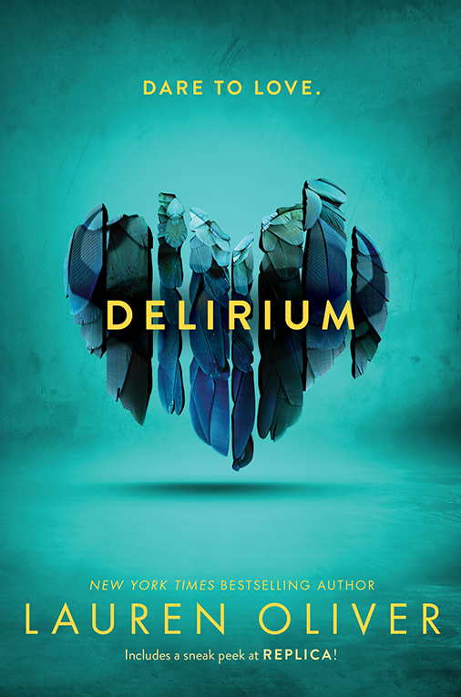
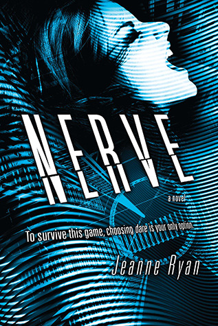

Fahrenheit 451 is a story set in the 24th century, where the population is controlled and books are considered illegal. The main character, Guy Montag, is a fireman in charge of burning any book that is found.
Marie Lu
Genre: Dystopian
The flooded coast of former Los Angeles. Two warring nations of North America: the Republic and the Colonies.
Born into an elite family in one of the Republics wealthiest districts, fifteen year old June is a prodigy. Obedient, passionate, and committed to her country, she is being groomed for success in the Republics highest military circles.
Born into the slums of the Republics Lake Sector, fifteen year old Day is the countrys most wanted criminal. But his motives may not be as malicious as they seem.
From different worlds, June and Day have no reason to cross paths, until the day Junes brother is murdered. And Day becomes the prime suspect. Now, caught in the ultimate game of cat and mouse, Day is in a race for his familys survival while June tries desperately to avenge her brothers death. But in a shocking turn of events, the two uncover the truth of what has really brought them together and the sinister lengths their country will go to in order to keep its secrets.
Click to see the book on Amazon
Delirium

Lauren Oliver
Genre: Dystopian
Before scientists found the cure, people thought love was a good thing.
They didn’t understand that once love -- the deliria -- blooms in your blood, there is no escaping its hold. Things are different now. Scientists are able to eradicate love, and the government demands that all citizens receive the cure upon turning eighteen. Lena Holoway has always looked forward to the day when she’ll be cured. A life without love is a life without pain: safe, measured, predictable, and happy.
But with ninety-five days left until her treatment, Lena does the unthinkable: She falls in love.
Click to see the book on Amazon
Need
Joelle Charbonneau
Genre: Dystopian
What do you really need?
One by one, the teens in Nottawa, Wisconsin, join the newest, hottest networking site and answer one question: What do you need? A new iPhone? Backstage passes to a concert? In exchange for a seemingly minor task, the NEED site will fulfill your request. Everyone is doing it. So why shouldn’t you?
Kaylee Dunham knows what she needs—a kidney for her sick brother. She doesn’t believe a social networking site can help, but it couldn’t hurt to try.
After making her request, Kaylee starts to realize the price that will have to be paid for her need to be met. The demands the site makes on users in exchange for their desires are escalating, and so is the body count. Will Kaylee be able to unravel the mystery of who created the NEED network before it destroys them all?
Click to see the book on Amazon
Nerve

Jeanne Ryan
Genre: Dystopian
For fans of The Hunger Games
A high-stakes online game of dares turns deadly.
When Vee is picked to be a player in NERVE, an anonymous game of dares broadcast live online, she discovers that the game knows her. They tempt her with prizes taken from her ThisIsMe page and team her up with the perfect boy, sizzling-hot Ian. At first it's exhilarating--Vee and Ian's fans cheer them on to riskier dares with higher stakes. But the game takes a twisted turn when they're directed to a secret location with five other players for the Grand Prize round. Suddenly they're playing all or nothing, with their lives on the line. Just how far will Vee go before she loses NERVE?
Click to see the book on Amazon

 Must Reads
Must Reads